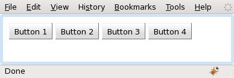
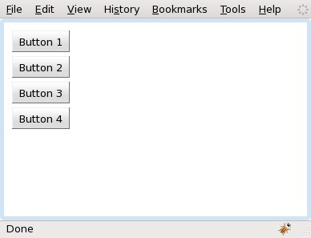
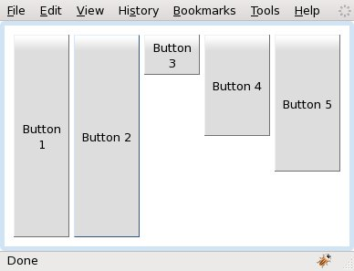
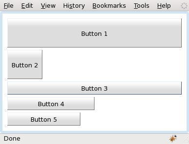

com.google.gwt.user.client.ui.LayoutManagerHelper
org.gwt.mosaic.ui.client.layout.BaseLayout
org.gwt.mosaic.ui.client.layout.BoxLayout
com.google.gwt.user.client.ui.LayoutManagerHelper
org.gwt.mosaic.ui.client.layout.BaseLayout
org.gwt.mosaic.ui.client.layout.BoxLayout
|
||||||||||
| PREV CLASS NEXT CLASS | FRAMES NO FRAMES | |||||||||
| SUMMARY: NESTED | FIELD | CONSTR | METHOD | DETAIL: FIELD | CONSTR | METHOD | |||||||||
java.lang.Object
public class BoxLayout
A layout manager that allows multiple widgets of a LayoutPanel to be
laid out either vertically or horizontally. The height and width of each
widget in a BoxLayout can be specified by setting a
BoxLayoutData object into the widget using
LayoutPanel.add(Widget, LayoutData) and also by using CSS or a
combination of both methods.
BoxLayout aligns all widgets in one row if the BoxLayout.Orientation
field is set to HORIZONTAL, and one column if it is set to
VERTICAL.
NOTE: BoxLayout does not have the ability to wrap.
When a BoxLayout lays out widgets, it tries to size each widget at
the widget's preferred size. In the following example a LayoutPanel
is set to use a BoxLayout. The default orientation of a
BoxLayout is HORIZONTAL. The LayoutPanel is added
decorated to a Viewport so that it fills all browser's content area:
|  |
public void onModuleLoad() {
Viewport viewport = new Viewport();
LayoutPanel panel = new LayoutPanel(new BoxLayout());
panel.setPadding(10);
panel.setWidgetSpacing(5);
panel.add(new Button("Button 1"));
panel.add(new Button("Button 2"));
panel.add(new Button("Button 3"));
panel.add(new Button("Button 4"));
viewport.add(panel, true);
RootPanel.get().add(viewport);
}
|
The next example sets the orientation of the BoxLayout to
BoxLayout.Orientation.VERTICAL:
|  |
public void onModuleLoad() {
Viewport viewport = new Viewport();
LayoutPanel panel = new LayoutPanel(new BoxLayout(Orientation.VERTICAL));
panel.setPadding(10);
panel.setWidgetSpacing(5);
panel.add(new Button("Button 1"));
panel.add(new Button("Button 2"));
panel.add(new Button("Button 3"));
panel.add(new Button("Button 4"));
viewport.add(panel, true);
RootPanel.get().add(viewport);
}
|
BoxLayoutData can specify the size of the widgets. In the next two
examples: Button 1 will be stretch to fill the available space in
both directions (horizontally and vertical); Button 2 will be
stretched only vertical, Button 3 will be stretched only
horizontally; Button 4 and Button 5 will be set to a
specific size by giving explicitly the width and height in pixels or ratios
(values > 0 and <= 1 are ratios of the LayoutPanel's client area
except paddings, 0 and values > 1 are pixels, and -1 means preferred size).
|  |
public void onModuleLoad() {
Viewport viewport = new Viewport();
LayoutPanel panel = new LayoutPanel(new BoxLayout());
panel.setPadding(10);
panel.setWidgetSpacing(5);
panel.add(new Button("Button 1"), new BoxLayoutData(FillStyle.BOTH));
panel.add(new Button("Button 2"), new BoxLayoutData(FillStyle.VERTICAL));
panel.add(new Button("Button 3"), new BoxLayoutData(FillStyle.HORIZONTAL));
panel.add(new Button("Button 4"), new BoxLayoutData(-1.0, 0.5));
panel.add(new Button("Button 5"), new BoxLayoutData(-1.0, 150.0));
viewport.add(panel, true);
RootPanel.get().add(viewport);
}
|
|  |
public void onModuleLoad() {
Viewport viewport = new Viewport();
LayoutPanel panel = new LayoutPanel(new BoxLayout(Orientation.VERTICAL));
panel.setPadding(10);
panel.setWidgetSpacing(5);
panel.add(new Button("Button 1"), new BoxLayoutData(FillStyle.BOTH));
panel.add(new Button("Button 2"), new BoxLayoutData(FillStyle.VERTICAL));
panel.add(new Button("Button 3"), new BoxLayoutData(FillStyle.HORIZONTAL));
panel.add(new Button("Button 4"), new BoxLayoutData(0.5, -1.0));
panel.add(new Button("Button 5"), new BoxLayoutData(150.0, -1.0));
viewport.add(panel, true);
RootPanel.get().add(viewport);
}
|
| Nested Class Summary | |
|---|---|
static class |
BoxLayout.Orientation
|
| Constructor Summary | |
|---|---|
BoxLayout()
Creates a new instance of BoxLayout with horizontal orientation. |
|
BoxLayout(BoxLayout.Orientation orientation)
Creates a new instance of BoxLayout with the given orientation. |
|
| Method Summary | |
|---|---|
BoxLayout.Orientation |
getOrient()
Deprecated. Replaced by getOrientation(). |
BoxLayout.Orientation |
getOrientation()
Gets the orientation of the child widgets. |
int[] |
getPreferredSize(LayoutPanel layoutPanel)
Computes and returns the size of the LayoutPanel according to this
layout. |
boolean |
isLeftToRight()
If orientation is BoxLayout.Orientation.HORIZONTAL this method returns
true if the child widgets are positioned from left to right,
false otherwise. |
void |
layoutPanel(LayoutPanel layoutPanel)
Lays out the specified LayoutPanel according to this layout. |
boolean |
runTwice()
Indicates whether LayoutManager.layoutPanel(LayoutPanel) has to run twice. |
void |
setLeftToRight(boolean leftToRight)
If orientation is BoxLayout.Orientation.HORIZONTAL this method defines
whether the child widgets are positioned from left to right, or from right
to left. |
void |
setOrient(BoxLayout.Orientation orient)
Deprecated. Replaced by setOrientation(Orientation). |
void |
setOrientation(BoxLayout.Orientation orient)
Sets the orientation of the child widgets. |
| Methods inherited from class org.gwt.mosaic.ui.client.layout.BaseLayout |
|---|
getFlowHeight, getFlowWidth, getLayoutData, setBounds, setLayoutData, setSize, setXY |
| Methods inherited from class com.google.gwt.user.client.ui.LayoutManagerHelper |
|---|
_getLayoutData, _setLayoutData |
| Methods inherited from class java.lang.Object |
|---|
clone, equals, finalize, getClass, hashCode, notify, notifyAll, toString, wait, wait, wait |
| Constructor Detail |
|---|
public BoxLayout()
BoxLayout with horizontal orientation.
public BoxLayout(BoxLayout.Orientation orientation)
BoxLayout with the given orientation.
orientation - the orientation.| Method Detail |
|---|
public BoxLayout.Orientation getOrient()
getOrientation().
BoxLayout.Orientation.HORIZONTAL.
public BoxLayout.Orientation getOrientation()
BoxLayout.Orientation.HORIZONTAL.
public int[] getPreferredSize(LayoutPanel layoutPanel)
LayoutManagerLayoutPanel according to this
layout.
This method computes the preferred size that the client area of the
LayoutPanel must be in order to position all children at their
preferred size inside the panel according to the layout algorithm encoded
by this layout.
TODO: caching of child preferred sizes
layoutPanel - a LayoutPanel widget using this layout.
{width, height}) containing the computed size.public boolean isLeftToRight()
BoxLayout.Orientation.HORIZONTAL this method returns
true if the child widgets are positioned from left to right,
false otherwise. Default is true.
true if the child widgets are positioned from left to
right, false otherwise.public void layoutPanel(LayoutPanel layoutPanel)
LayoutManagerLayoutPanel according to this layout.
This method positions and sizes the children of a LayoutPanel using
the layout algorithm encoded by this layout. Child widgets of the
LayoutPanel are positioned in the client area of the panel. The
position of the LayoutPanel is not altered by this method.
TODO: caching of child preferred sizes
layoutPanel - the LayoutPanel to be laid outpublic boolean runTwice()
BaseLayoutLayoutManager.layoutPanel(LayoutPanel) has to run twice. This
method is called by a LayoutPanel.layout() internally to check if
LayoutManager.layoutPanel(LayoutPanel) should be run again because e.g.: text
wrapping.
The default implementation returns false.
runTwice in interface LayoutManagerrunTwice in class BaseLayouttrue if LayoutManager.layoutPanel(LayoutPanel) has to run twice,
false otherwise.LayoutManager.runTwice()public void setLeftToRight(boolean leftToRight)
BoxLayout.Orientation.HORIZONTAL this method defines
whether the child widgets are positioned from left to right, or from right
to left.
leftToRight - true if the child widgets are positioned from
left to right, false otherwise.public void setOrient(BoxLayout.Orientation orient)
setOrientation(Orientation).
orient - the orientation of the child widgets.public void setOrientation(BoxLayout.Orientation orient)
orient - the orientation of the child widgets.
|
||||||||||
| PREV CLASS NEXT CLASS | FRAMES NO FRAMES | |||||||||
| SUMMARY: NESTED | FIELD | CONSTR | METHOD | DETAIL: FIELD | CONSTR | METHOD | |||||||||